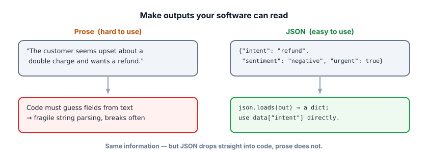
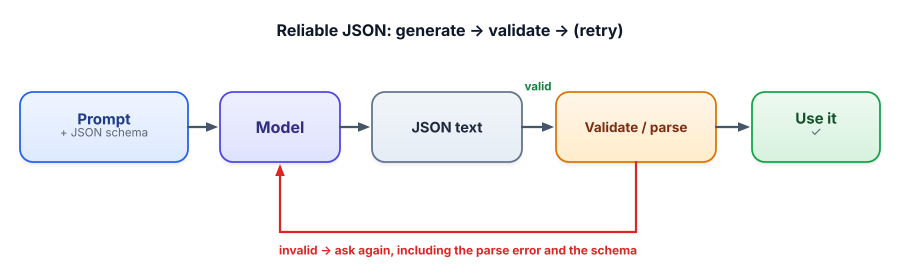

Structured output & JSON
Software can't read a chatty paragraph; it needs fields, such as intent, sentiment and urgent.
Structured output means the model replies in a fixed format, almost always JSON (JavaScript Object Notation).
A schema is the contract: which fields exist, their types and their allowed values.
Your code checks every reply against the schema before trusting it. That check is called validation.
If the check fails, you send the error back and ask again.
Structured output is like a form with labelled boxes instead of a blank page. 'Name: ___ Age: ___ Allergic to nuts: yes / no' gets answers a computer can file; 'tell me about yourself' gets a story someone has to read. Constrained decoding is like boxes that physically only accept digits where a number goes.
| In the picture | In the real system |
|---|---|
| A form with labelled boxes | A JSON schema: named fields with types |
| Yes / no tick boxes | Allowed values, e.g. intent ∈ {refund, billing, technical, other} |
| Boxes that only accept digits | JSON mode or constrained decoding (Ollama format="json") |
| A clerk checking the form before filing it | Validation in code, e.g. with pydantic |
| Handing the form back to be fixed | Retry with the validation error in the prompt |
Where the picture breaks. A form cannot stop someone writing a wrong but valid answer, and neither can a schema: it guarantees the shape, not the truth.
Going deeper
The moment you put an LLM inside software, you need its output in a shape code can read. This lesson is how you turn a chatty model into a reliable component — the bridge between “cool demo” and “shipped feature.”
Why structured output is non-negotiable for products
A human can read “the customer seems upset and wants a refund.” Your code can’t — not reliably. To route a ticket, update a database, or call another function, you need fields: intent="refund", sentiment="negative", urgent=true. Free-form prose forces fragile string-parsing that breaks the first time the model rephrases. Structured output — usually JSON — is what lets an LLM slot into a real system. It’s also the foundation of tool/function calling in Track 4, which is just structured output the model fills in.

Structured output means the model returns data in a fixed, machine-readable format — almost always JSON (JavaScript Object Notation: keys and values like {"urgent": true}). A schema is the contract describing the expected shape: which fields exist, their types, and allowed values. Validation is checking the model’s output actually matches that schema before you trust it.
Getting JSON reliably: four levers
Asking nicely isn’t enough on its own — models love to add “Sure! Here’s the JSON:” or a trailing explanation that breaks parsing. Use these together:
- Specify the exact shape in the prompt, ideally with a concrete example of the JSON (this is few-shot from 2.2 applied to format).
- Use a JSON/structured-output mode if your runtime has one. It constrains the model so the output is always valid JSON. Ollama supports this for free with
format="json"(and can even take a JSON schema). - Validate the parsed output against your schema — check fields, types, and allowed values, not just that it parses.
- Retry or repair on failure: send the error back and ask the model to fix it. This loop is what makes it production-grade.

Validate it yourself
Here’s a real validator (running in your browser). Edit the “model output,” or click a failure button, and watch validation catch exactly what’s wrong. This is the check your code must do on every response.
JSON validator
Target schema: intent ∈ {refund, billing, technical, other} · sentiment ∈ {positive, negative, mixed, neutral} · urgent : boolean
The whole pattern, end to end, with a free local model. pydantic defines the schema and validates types in one line:
!pip install ollama pydantic
import json, ollama
from pydantic import BaseModel, ValidationError
class Ticket(BaseModel): # the schema, as a Python class
intent: str
sentiment: str
urgent: bool
def extract(text, tries=2):
prompt = f"""Extract fields from the ticket as JSON with keys
intent (refund/billing/technical/other), sentiment (positive/negative/mixed/neutral), urgent (true/false).
Ticket: "{text}" """
for attempt in range(tries):
resp = ollama.chat(model="qwen2.5:7b",
messages=[{"role": "user", "content": prompt}],
format="json") # force valid JSON (free!)
try:
return Ticket(**json.loads(resp["message"]["content"])) # parse + validate
except (json.JSONDecodeError, ValidationError) as e:
prompt += f"\nYour last output was invalid: {e}. Return ONLY valid JSON." # retry w/ error
raise RuntimeError("Model could not produce valid JSON")
t = extract("My card was charged twice and no one has replied in 3 days!")
print(t.intent, t.sentiment, t.urgent) # -> refund negative TrueNotice what makes this robust: format="json" stops the model adding prose, pydantic guarantees the types are right before you use them, and the retry loop feeds the error back so a one-off slip self-corrects. That’s the difference between a script and a feature.
Assume an accounts team processes 3,000,000 invoices a month and extracts vendor, invoice number, date, total and currency. Failure rates are assumptions to replace with your own measurements.
- Free-text prompting. Suppose 4% of replies fail to parse (prose around the JSON, trailing commas). 3M x 4% = 120,000 broken records a month.
- Constrain the shape. Pass a JSON schema as the format. Ollama accepts a schema in
format(Ollama docs), and hosted APIs have their own structured output features (Anthropic docs). Parse failures drop to about zero. - Now count value errors. Valid JSON can still be wrong: a date as "next Friday", a total that does not match the line items, currency "dollars" instead of an ISO code. Suppose 1.5% fail validation: 3M x 1.5% = 45,000 a month.
- Retry with the error. Send the validation message back once. Suppose 85% fix themselves: 45,000 x 0.85 = 38,250 recovered, at the cost of 45,000 extra calls (1.5% more volume).
- Human queue. The remaining 6,750 a month, about 225 a day, go to a reviewer. At 1 minute each that is under 4 hours a day: affordable, and every case becomes a test example.
- Design the schema to allow honesty. Make fields nullable where invoices really omit them, use enums for currency, and add a cross-check in code (sum of lines = total). A schema that forces every field pushes the model to invent values.
- Software needs machine-readable output; JSON is the default, and it underpins tool calling (Track 4).
- Get reliable JSON with four levers: specify the shape, use a JSON mode, validate, and retry on failure.
- Validate values, not just syntax — check required fields, types, and allowed enums.
- The production pattern is a generate → validate → retry-with-error loop; never trust raw output as data.
- Tools like pydantic turn a schema into one-line validation; runtimes like Ollama’s
format="json"make valid JSON free.
Your extraction endpoint works 95% of the time, but occasionally the model returns {"urgent": "yes"} instead of a boolean and a downstream service crashes. Best fix?
The model returns JSON with a chatty preamble. What's the robust production fix?
With schema-constrained decoding switched on, the model returns {"currency": "USD", "total": 1250.0} for an invoice whose real total is 1,520. What does this show?
1. Design a JSON schema for extracting a calendar event from a message: title, date, start time, attendees (list), and whether it’s all-day. Which fields might legitimately be missing, and how do you represent that?
2. The model returns valid JSON, but "date": "next Tuesday" instead of an ISO date. Is this a parsing failure or a validation failure? How do you handle it?
3. Why is “the output parsed as JSON” not enough to trust it?
▸ Show solutions & reasoning
1. Something like: {title: str, date: str (ISO), start: str|null, attendees: list[str], all_day: bool}. Optional fields (a missing time, no attendees) should be represented explicitly — null or an empty list — and your schema should allow that (e.g., start: Optional[str]). Forcing every field to be present pushes the model to invent values; allowing nulls lets it honestly say “absent,” which you then handle in code.
2. Neither pure parsing nor a type error — it’s a semantic validation failure: the value is a string (correct type) but not the format you need. Handle it by validating the value (e.g., that date matches an ISO pattern), and either instruct the model to output ISO dates with an example, or post-process “next Tuesday” into a real date. Type-checking alone won’t catch this; value-checking will.
3. Because valid JSON only guarantees syntax, not meaning. {"urgent": "yes"} parses fine but is the wrong type; {"intent": "banana"} parses fine but isn’t an allowed value; a required field can be missing entirely. Trusting “it parsed” lets bad data into your system. You must validate fields, types, and allowed values — the shape and the contents.
“JSON mode” and schema-constrained output aren’t just a stern instruction — they change the decoding step from Track 1. Remember the model outputs a probability over every possible next token, and a sampler picks one. Constrained decoding adds a filter: at each step, it masks out any token that would make the output violate the grammar (or schema), so only tokens that keep the JSON valid can be chosen.
If the model is mid-string, a closing brace is forbidden; if a field expects a boolean, only true/false tokens are allowed. The result is output that is guaranteed to parse, by construction. Providers expose this as “JSON mode,” “structured outputs,” or “function calling”; libraries like Outlines and llama.cpp grammars do it locally.
Two caveats keep you honest. First, constrained decoding guarantees shape, not truth — the model can still fill valid fields with wrong values, so semantic validation and grounding still matter. Second, even with a JSON mode, keep the validate-and-retry loop: it’s your safety net for the value-level errors a grammar can’t catch (wrong enum, impossible date, hallucinated id). Shape from the decoder, correctness from your validation — use both.
You can now make outputs that software trusts. The last prompting lesson zooms out to the reusable patterns and anti-patterns — the playbook pros reach for, and the traps that quietly wreck prompts.
labs/02_structured_output.pyFree and offline once set up: Ollama with qwen2.5:7b, plus the packages in labs/README.md. From the course folder:
python labs/02_structured_output.pyWhat to look for: This lab is this lesson. Compare section A2 (vague prompt: 0 of 4 parseable), section A (keys pinned in the prompt: 8 of 8) and section B (schema passed as format: 8 of 8). Section C runs a business-rule check with retry-with-error-feedback; on our run no rule was broken, so it printed 0 repairs: the loop is there, but this data never triggered it. To see it fire, add an email whose order id the model is likely to mangle, or tighten a rule in business_rules().
Small samples: these labs use 5 to 20 cases so they run in minutes on a laptop. Where they report a rate, they print n and a 95% Wilson interval. Read them as a demonstration of the mechanism, not as a measured rate for your system; for that you need hundreds of cases and several seeds.
▸ Recorded output (our run, 2026-11-03, qwen2.5:7b on a laptop GPU)
C) Schema-valid is not business-valid: validate rules, retry with the error
rule violations repaired by retry: 0
D) Content check against gold labels (shape-valid does not mean right)
#4: model said 'delivery', a human would file 'other': 'Just wanted to say the delivery guy was very polite. thanks!'
category accuracy: 7/8
Summary
vague-prompt valid: 0/4 = 0% (95% CI 0%-49%)
prompt-only valid: 8/8 = 100% (95% CI 68%-100%)
schema-constrained valid: 8/8 = 100% (95% CI 68%-100%)
category accuracy (gold): 7/8 = 88% (95% CI 53%-98%)
On this model and these 8 emails a clear prompt already gives valid JSON every time, so the schema shows
NO measurable advantage here. Its value is the guarantee on the inputs you have not tested yet.
Look: constrained decoding guarantees the SHAPE. It does not guarantee the CONTENT is right;
that is what the business-rule check + retry (and your eval set) are for.Your numbers will differ a little run to run. Full log: labs/outputs. Source: labs/02_structured_output.py.
Warm-up. Write a Pydantic model for a support ticket with: intent (one of refund, billing, technical, other), urgent (bool), order_id (string or missing).
▸ Solution
from typing import Literal, Optional
from pydantic import BaseModel
class Ticket(BaseModel):
intent: Literal["refund", "billing", "technical", "other"]
urgent: bool
order_id: Optional[str] = NoneTransfer. Your retry loop sometimes runs 5 times on the same email and still fails, burning tokens. Improve the loop.
▸ Solution
Cap retries at 1 or 2. Make each retry message specific: quote the exact validation error and the field. If it still fails, stop and route the case to a fallback: a human queue, a stronger model, or a partial record with failed fields set to null and flagged. Log the input and errors so the case joins your test set. Also check the schema itself, because repeated failure on one field often means the schema demands something the input does not contain.
Stretch. Explain how a grammar-constrained decoder decides which tokens are allowed at each step, and why it can make some outputs slightly worse in quality.
▸ Solution
The decoder tracks where it is in the grammar (a state machine built from the JSON schema). At each step it masks every token that would lead to an invalid continuation, then samples from what is left, renormalised (Willard and Louf, 2023, describe an efficient indexed version). Quality can dip because the mask may force awkward tokenisations or cut off the path the model would have taken to a good answer, especially if the schema forces fields in an unnatural order. Mitigations: order fields so reasoning-like fields come before conclusions, keep schemas simple, and evaluate quality, not just validity.
Junior How do you get reliable JSON out of an LLM?
▸ Model answer
Describe the exact shape in the prompt with an example, use the runtime's structured output or JSON mode (for example passing a JSON schema as Ollama's format), parse and validate against a schema with something like Pydantic, and on failure retry once with the error message. Never pass raw model output to downstream code without validation.
Mid What is the difference between JSON mode, schema-constrained output, and function or tool calling?
▸ Model answer
JSON mode guarantees syntactically valid JSON but not your fields. Schema-constrained output restricts decoding to a specific JSON schema, so required fields, types and enums are enforced. Tool calling has the model fill in arguments for a named function defined by a schema; the same constraint idea, but framed as an action your code executes. In all three you still validate values, because a schema cannot know that a total is wrong or an id does not exist.
Senior Design the extraction pipeline for millions of documents a month, with an accuracy target of 99.5% per field.
▸ Model answer
Schema-constrained extraction with nullable fields and enums, code-level cross-checks (totals, dates, id formats, lookups against master data), one retry with the specific error, then routing to a stronger model or a human queue. Measure per-field accuracy on a labelled sample every week, not just parse rate. Version schemas and prompts together, and make downstream consumers handle nulls. Log every correction as a new test case. Use batch APIs for cost and keep a confidence or review flag in the record, so 99.5% is measured rather than assumed.
In one line: Ask for a fixed shape, check every reply against it, and send it back when it fails.